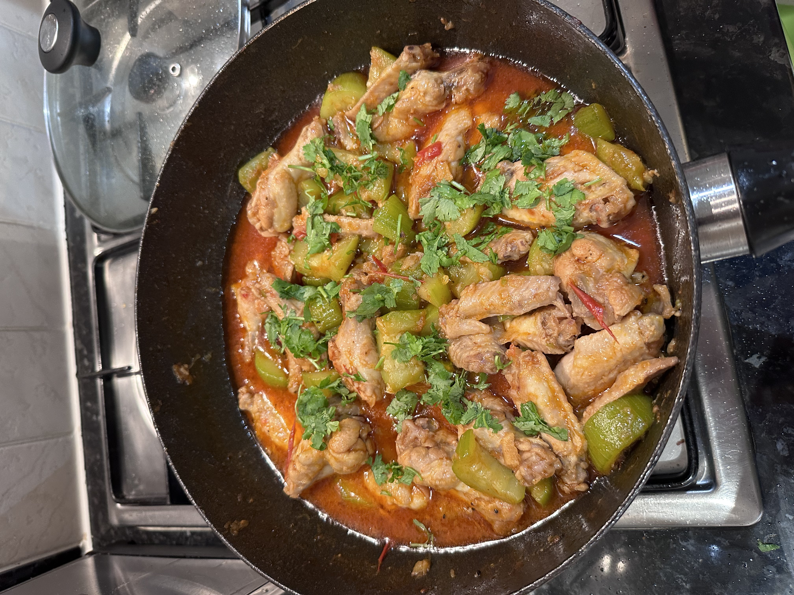

Chicken Courgette Curry

Description
This curry provides a lot of protein intake and sweetness from the courgettes
Ingredients
- Chicken wings
- Salt, Pepper, Smoked Paprika
- Shallot, Garlic, Ginger, Tomates Courgettes
- Fish sauce
Steps
- Fry shallot, garlic, ginger, and tomatoes until softened into a paste.
- Add the chicken and season with salt & pepper to taste.
- Add water into the pan and continue cooking on medium heat.
- Add courgettes half-way.
- Add fish sauce at the end (optional).